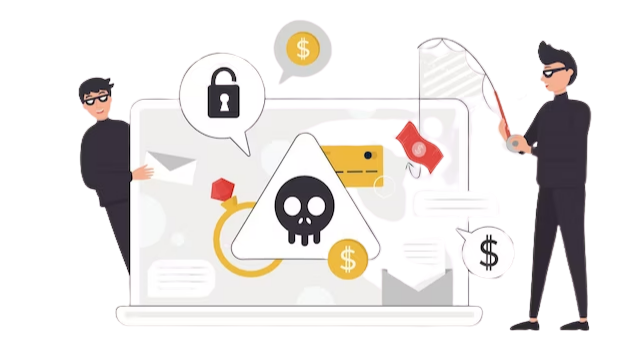

Anti-Phishing Software:
Features, Functions, And Selection Criteria
In today's digital age, phishing attacks remain a significant threat to individuals and organizations alike. These attacks are designed to trick users into providing sensitive information such as login credentials or financial data.
Anti-phishing software is an essential tool in protecting against such attacks. This software can perform various functions, including email and web filtering, user training, threat intelligence, reporting, and analytics. When selecting anti-phishing software, it is crucial to consider several factors, such as detection accuracy, ease of use, integration, reporting and analytics, support and maintenance, scalability, and cost.
In this article, we will delve deeper into the features, functions, and selection criteria of anti-phishing software to help organizations make informed decisions in protecting their sensitive information from phishing attacks. Click here to know more about anti phishing software.
What is Anti-Phishing Software?

Phishing attacks have become increasingly common in recent years, with cybercriminals using deceptive tactics to trick unsuspecting individuals into providing sensitive information such as usernames, passwords, and credit card details. Anti-phishing software is designed to protect individuals and businesses from these attacks by detecting and blocking fraudulent websites and emails.
Features of Anti-Phishing Software
Effective anti-phishing software should possess several key features that enhance its ability to detect and prevent phishing attacks. These include:
- Real-time analysis: The software should be able to analyze websites and emails in real-time, detecting any signs of phishing attempts and blocking them immediately.
- URL and link analysis: Anti-phishing software should analyze the URLs and links in emails and websites, checking for any signs of fraud, such as variations in domain names or redirects to suspicious websites.
- Content analysis: The software should be able to analyze the content of emails and websites, identifying any suspicious language or requests for personal information.
- Reporting and alerts: Anti-phishing software should provide detailed reports on detected phishing attempts, including the type of attack and the user or system affected. It should also provide alerts to users when potential phishing attempts are detected.
Functions of Anti-Phishing Software
Anti-phishing software is a crucial tool in protecting individuals and organizations from phishing attacks, which can be highly damaging and costly. The software can perform several functions that enhance its ability to detect and prevent phishing attacks, including:
- Email filtering: Anti-phishing software can filter incoming emails and analyze them for signs of phishing attempts. This function helps to prevent phishing emails from reaching the intended recipient's inbox.
- Web filtering: Anti-phishing software can analyze web traffic and block access to fraudulent websites. This function is essential in preventing individuals from entering sensitive information into fake websites created by cybercriminals.
- User training: Anti-phishing software can provide training to users on how to identify and avoid phishing attacks. This function is crucial in preventing employees from falling prey to phishing attempts that can compromise sensitive data.
- Threat intelligence: Anti-phishing software can use threat intelligence to identify new and emerging phishing threats. This function helps the software stay up-to-date with the latest tactics used by cybercriminals to launch phishing attacks.
- Reporting and analytics: Anti-phishing software can provide detailed reporting and analytics on detected phishing attempts. This function allows security teams to analyze trends, identify vulnerabilities, and improve their security posture.
Selection Criteria for Anti-Phishing Software
Selecting the right anti-phishing software is critical for any organization's cybersecurity strategy. When evaluating anti-phishing software options, several important factors should be considered. Here are some selection criteria to help guide the decision-making process:
- Detection accuracy: The software should have a high detection rate for phishing attempts, with few false positives or negatives.
- Ease of use: The software should be easy to install, configure, and use, with minimal training required.
- Integration: The software should integrate seamlessly with existing security solutions and infrastructure.
- Reporting and analytics: The software should provide detailed reporting and analytics on detected phishing attempts, allowing for informed decision-making and continuous improvement.
- Support and maintenance: The software vendor should provide reliable support and regular updates to ensure its effectiveness.
To conclude, anti-phishing software is a critical tool in protecting businesses from the increasing threat of phishing attacks. When selecting anti-phishing software, it's important to consider the features and functions that are most relevant to your organization's needs. From AI-based detection algorithms to email authentication and encryption, there are various criteria to keep in mind when selecting an anti-phishing solution.